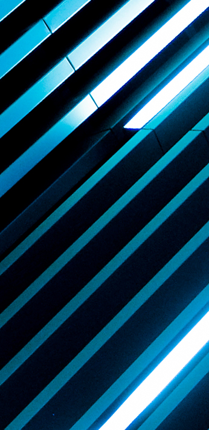
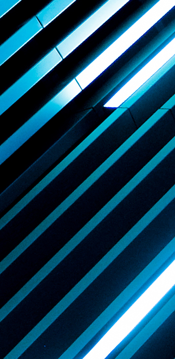

neoneon
 

Synthesizing unique shared experiences that blur the line between art and technology

Ray Weitzenberg
Co-Founder,
Creative Technologist
Ray is a visual artist and technologist living and working in Brooklyn. In 1994 via the mechanism of photography he discovered a profound appreciation for light. This led to capture, manipulation and projection of visuals at venues ranging from art galleries to loft parties and city streets. In addition to his original photography and video, most recently Ray has been creating programmatic imagery and interactive environments. He currently works as a senior frontend developer at UNIQLO USA. rayweitzenberg.com

Andrey Radovski
Co-Founder,
Lead Designer
Andrey is a professional sound engineer, experimental musician, and DJ who draws on his contributions to award-winning feature films, live audio-visual shows, underground dance parties, and multimedia theater to create ephemeral dream-like experiences through an emerging medium of mixed reality. Andrey’s past credits include contributions to official selections at Sundance, SXSW Film, and Berlin Film Festival, as well as to shows at BRIC Arts, Here Arts Center, Gibney Dance, and dance music events highlighted by Resident Advisor and TimeOut NY. andreyradovski.com